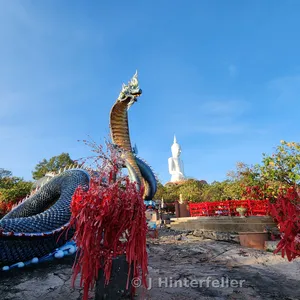
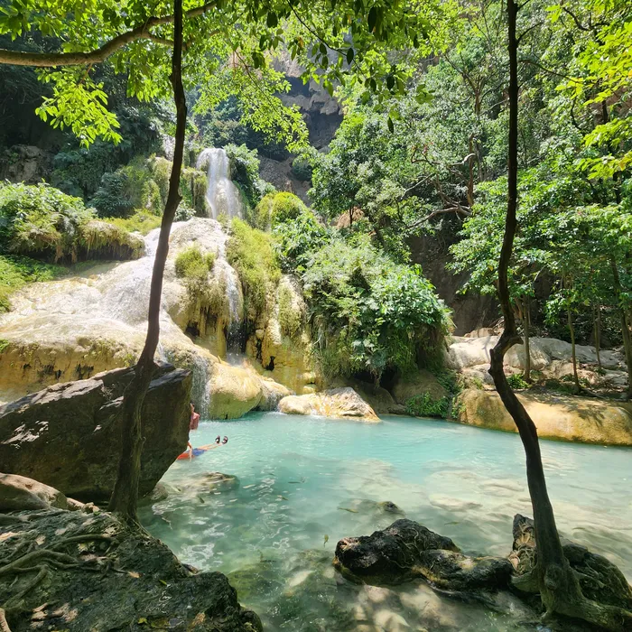
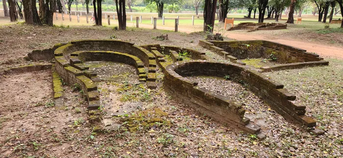
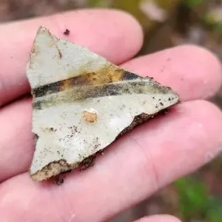

Mukdahan
Naga King Guardian of the Pearl Buddha
Traditions & Folklore
{kind=link}

Mukdahan
Continued →
Traditions & Folklore


It would take a lifetime to explore all the wonders of Thailand
ENTER A SECOND PARAGRAPH HERE
PASTE YOUR ARTICLE TEXT HERE
The morning carried that brief, deceptive cool before the tropical heat settles in. I slept well at the Withoon Guesthouse; quiet, cheap, and run by kind women. They were helpful, but we shared little other than polite smiles and the customary, silent gestures of a language barrier. For thirty baht, barely a dollar, I rented a bicycle that felt like a rolling mechanical disaster. By the time I cleared the first intersection, the seat was sliding beneath me, the handlebars held a nervous wobble, and the brakes ground metal-on-metal every time I slowed. "Adventure," I muttered, in self-satisfied optimism, as I rattled my way out of town.
The off-season hung heavy over Sukhothai. You could feel it in the quiet streets and the desperate edge of the local commerce. It was a sharp, sudden reminder that I was no longer in Khukhan. Back home in Khukhan, where I teach, life has a predictable, respectful rhythm; I am a known quantity, a neighbor, never a target for the expat tax. But Sukhothai is an economy built on transient visitors—people who arrive from places where their money has a different value. They don't really notice, and if they do, they typically accept it, comparing it to prices back home. It is a bargain for them. They look at ruins, and leave forever. There is no incentive to give a farang local prices because there is no repeat business.
I felt the friction of this at a small stationery shop. The owner rang up a notebook for one hundred baht. The printed price tag clearly read sixty. When I caught his eye, pointing at the tag with a silent, questioning look, he didn't blink. He just gave me an apathetic, slow-motion shrug that said everything: you can afford it, and what are you going to do about it anyway? It's the minor tax of being a farang in a Southeast Asian tourist town, especially during slow season. You pay the price, swallow the irritation, and keep moving.
I pedaled the unstable bicycle north along Route 12, cutting right onto Route 1113, and traced the ghost-banks of the ancient moats that once squared off the old city walls. To my right stood the weathered, Khmer-style prasat of Wat Phra Phai Luang, remnant of the empire that held this ground before the two brothers decided they had had enough with the exploitation of a distant ruler. I kept riding along the edge of the square moat, turning left with the water. The remains of the ancient pottery kilns sat on the right.
Standing among the ruins of the Thuriang Kilns, the modern world and its petty financial frictions finally evaporated. Shards of discarded Sangkhalok ceramics that failed the final inspection seven centuries ago peeked up through the grass. I stood there alone, save for a solitary local man casting a fishing line into the green waters of the moat. It wasn't long before I let my mind drift. You could almost feel the heat of the massive fires, but that was just the sun breaking through the morning freshness. I imagined the children hauling river mud, and the commands of master artisans throwing pottery destined for the high markets of Imperial China. It is a spectacular, abandoned place, and easily one of the finest mornings I've ever spent on the road.


Walking among the ruins of the Thuriang Kilns, the modern world and its petty financial frictions finally evaporated. Shards of discarded Sangkhalok ceramics that failed the final inspection seven centuries ago peeked up through the grass. I stood there nearly alone. A solitary local man cast a fishing line into the green waters of the moat. It wasn’t long before I let my mind drift. You could almost feel the heat of the massive fires, but that was just the sun breaking the morning freshness. I imagined the children hauling river mud, and the commands of master artisans throwing pottery destined for the high markets of Imperial China. It is a spectacular, abandoned place, and easily one of the finest mornings I’ve ever spent on the road.
{kind=link}
{kind=link}
{kind=link}
{kind=link}
{kind=link}
{kind=link}
{kind=link}